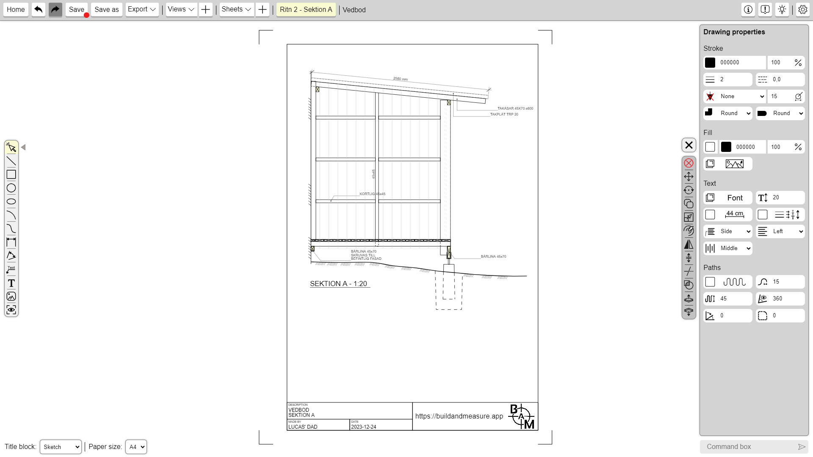
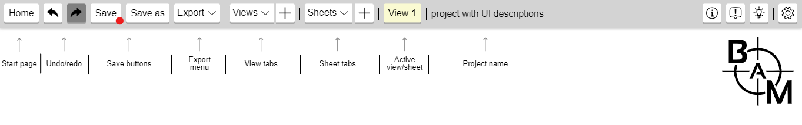
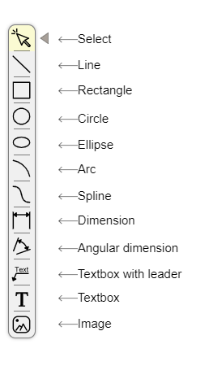
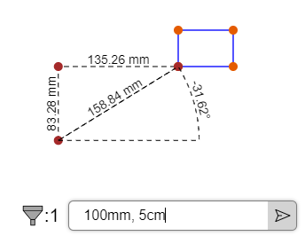

Overview
About
Build and Measure, also known as BAM, is a user-friendly 2D drafting
program that comes at no cost, aiming to provide a lightweight
experience for users.
Build and Measure is created and maintained by a single developer,
and if you find any issues or bugs please
report them, it really helps!
Get started
Get started with Build and Measure by diving into the
tutorials or by reading the
comprehensive documentation.
Build and Measure is available to
download for both Windows and Linux,
although not yet for MacOS, because that would require a code
signing certificate, and that would cost too much to keep this app
free to use.
Project management

Creating and saving projects
To create a project, press the "create project" button in the left
navbar when in the start page.
This will open the editor with an
unsaved project
which you can now save by pressing the
save button. The
first time you press the save button in a new project you will be
required to specify a file location but after that the file location
will be remembered.
You can also save a project with the
save as button
which will let you select a file and write the project to that file,
although the file location won't be stored so the save button will
still save in the same file.
Opening projects
To open an existing project from a file, press the "open project"
button in the left navbar when in the start page, this will let you
let you select a project in the file explorer which will then be
opened in the editor, when you press the
save button the
changes will now be written to the opened file.
If you save a project, a project shortcut will appear in the start
page. Each project shortcut has a name field, and a button to show a
pop-up menu. The pop-up menu has options to open the project, rename
the project, to open the location where the project file is stored
and an option to delete the shortcut (please note this will not
delete the project file just the shortcut). You can also press on
the image of the shortcut to open the project and press on the name
field to rename it.
The project editor
The project editor lets you create drawings by drawing and manipulating
different kinds of objects on a canvas.
And export drawings to either SVG, PDF, PNG or JPG in different title blocks and paper sizes.

Coordinate system
The editor has a horizontal x-axis, and a vertical y-axis, where the x-axis starts at the left edge and goes to the right edge, and the y-axis goes from the top edge to the bottom edge. This means that the coordinates: (0, 0) will be in the top left corner of the screen and (screen_width, screen_height) will be the bottom right corner of the screen. When using the command box, the distances specified will be relative, meaning they wont go from (0, 0) but instead where the object started moving, or where the last drawing click was when drawing.
Panning and zooming
In Build and Measure you can hold down the scroll wheel and move the
mouse to pan around the canvas, and rotate/scroll the scroll wheel
to zoom in and out. To change how sensitive the zoom is, you can
change the "zoom speed" in the
settings menu.
If you
are using trackpad and don't have access to a scrollwheel, you can
zoom by moving two fingers and pan by holding down shift + alt when
moving the mouse.
Control panel
The control panel is positioned at the top of the screen, and has buttons to for example save/export and control the views and sheets of the project. It also displays the project's name and has buttons to the far right for quickly accessing the documentation (this page), and the report issue and request feature forms.

Views and sheets
A project is divided up into multiple "views" and "sheets". Both function as a way to structure projects by dividing them up into different logical "tabs", although they have slightly different use cases. Views are generally used to create drawings of stuff in 1:1 scale, while sheets are used for creating exports with different papper sizes and title blocks. Views can be used to for example create drawings of a house, room layout or some icon, while sheets allow you to insert "viewports" (using the viewport tool) of different views and specify different types of papper sizes for exporting (usefull for PDF). Sheets can also be usefull when creating posters for printing on papper.
Views and crop region
Each view has a scale and a crop region size, which can be changed in the input boxes in the bottom of the editor. The scale of a view defines which scale the view should be in when it is drawn with a viewport in a sheet view. And the crop region is the area of the view that will be visible from a viewport. The crop region visibility can be toggled using the checkbox in the bottom left corner of the editor (to the right of the view scale input), and it can be resized with the width/height input boxes to the right of that. Next to those inputs are two more buttons. The first button selects the objects that are partially inside of the crop region. The one to the right of that is used for moving (fitting) the crop region to the selected objects. Check out the crop region settings for more control of this feature.
Sheets and title block
A sheet view doesn't have a scale and crop region, but instead has a title block and paper size, which are used to create a drawing frame/title block which will be used when exporting. You can change the title block and papper size using the dropdown menus in the bottom left corner of the editor (while in a sheet).
Drawing objects
To draw an object, select which object to draw in the
tool-bar and then press on the
canvas to start drawing.
Each object requires a different amount of clicks:
- Line - polyline
- Rectangle - 2 clicks
- Circle - 2 clicks
- Ellipse - 2 clicks
- Arc - 3 clicks
- Spline - polyline
- Dimension - 3 clicks
- Textbox - 1 click
- Textbox With Leader - 2 clicks
- Image - 2 clicks (will keep it's aspect ratio unless the shift key is pressed)
- Viewport - 1 click (only available in sheets)
To change for example the line width and stroke color of the object that will be drawn, you can change the drawing properties in the properties panel.
Polylines
The line and spline objects are polylines meaning that they
don't stop drawing until you escape by either pressing the
escape key, right-clicking or by pressing on another tool. You
can also turn off polylines in the
settings menu, then they
will have a click count of 2.
To quickly toggle the polyline setting you can also use the
shortcut "p".
Snapping
When drawing, moving or selecting objects, you are able to press on
certain "snap points" that will snap the mouse to that point. When
drawing a line for example, you can hover over a snap point and the
end of the line will snap to that point.
There are five different snap points:
- End point - end points are red snap points that are on the edge of objects, like the four corners of a rectangle.
- Center point - center points are blue snap points that are positioned between two edge points, or in the middle of an object.
- Edge point - Edge points are green snap points, that allow you snap to the closest point on for example a line or the edge of a circle.
- Intersection point - intersection points, are purple snap points, that allow you to snap to the intersection between two objects (this doesn't work on all objects, like for example splines).
- Canvas point - canvas points, are orange snap points, that allow you to snap to the grid which you can toggle in the settings menu and also the corners of the crop region in a view and the title block in a sheet.
You can also snap to specific angles when drawing and moving objects by pressing the shift key to snap to 90 degrees (horizontally/vertically) and the alt key to snap to a smaller angle that is specified in the settings menu, the default is 22.5 degrees. You could for example use this to draw a completely horizontal/vertical line or a line that has a 45 degree angle. This also works when moving objects, or when specifying a flip angle. Shift also has some other uses like for example drawing a completely squared rectangle.
Selecting objects
To select an object you need to activate the select tool which is
the top button in the
tool-bar.
You can select an object by clicking on it or by clicking on a
snap point on that object.
You can also drag the mouse (with the left mouse button down) to
select the objects that are fully within the area that appears.
If you press the control key while clicking on an object or dragging
the mouse, any object that was previously selected will remain
selected, this allows you to select multiple objects by clicking on
each one while holding control.
When an object is
selected, the stroke color will change to the
selected object color
to indicate that it's selected. In addition, small circles will
appear at the end points showing where you can snap to the object.
These points can also be moved by clicking on them. Furthermore,
small triangles will appear at the centers, which can also be
snapped to and moved by clicking on them.
Tool-bar
The tool-bar which is located on the left side is used to select the current tool.

Here is a list of all the buttons:
- Select tool - to select objects
- Line tool
- Rectangle tool
- Circle tool
- Ellipse tool
- Arc tool
- Spline tool
- Dimension tool
- Angluar Dimension tool
- Textbox with Leader tool
- Textbox tool
- Image tool
- Viewport tool (only available in sheets)
Command-bar
The command-bar is similar to the tool-bar in many ways, but it is only available when you have one or more objects selected, and instead of selecting a tool it allows you to activate a command on the currently selected objects. At the top of the command-bar is also another button that is used to toggle the properties panel.
Here is a list of all the commands:
- Delete command - deletes the selected objects
- Move command - to move the selected objects with a distance
- Rotate command - to rotate the selected objects around a point
- Duplicate command - to duplicate and move the selected objects
- Scale command - to scale the selected objects with a scale factor
- Offset command - to offset the selected object with a certain distance factor
- Flip command - to flip the selected objects around a flip axis
- Split command - to split the selected object on multiple points (only for lines and rectangles)
- Trim command - to trim/extend the selected line segments to a target line segment
- Image clip command - to clip the selected image objects to all of the other selected objects
- Move to front command - to move the selected objects to the front of all other objects
- Move to back command - to move the selected objects to the back of all other objects
- Point move - is activated by pressing an end point on a selected object, and moves only that point
- Center move - is activated by pressing a center point on a selected object, and moves all points next to that center point
Properties panel
The properties panel is used to change different properties on objects like for example the line width, stroke color and font size. When a drawing tool is selected (like the line, rectangle or circle tools), it will let you specify the properties for any object that is about to be drawn. When some objects are selected though, it lets you change the already existing properties on those objects.
Here is a list of all of the properties:
- Stroke color - the color of the stroke/edges and text
- Stroke opacity - the opacity of the stroke/edges and text
- Line width - the width of the stroke/edges
- Line dash - the dash of the stroke/edges
- Line cap - how lines should look at the ends
- Line join - how lines should look where they join
- Font size - the size of the text
- Font - which font family and font style to use on text
- Show measurements - whether to show the measurements of an object
- Scale text by line width - whether to scale the text size by the line width (multiplied by 20) instead of the font size
- Fill color - the color inside of an object
- Fill active - if the fill should be visible
- Fill opacity - the opacity of fill and images
- Selected image - the selected image of the object (only image objects)
- Insulation active - whether to activate insulation (only on lines)
- Insulation height - the height of the insulation (only on lines)
- Insulation radius - the radius of the insulation (only on lines)
- Visible angle - the amount of visible degrees
- Angle shift - how many degrees the visible angle should rotate/shift
- Border radius - the radius of the corners on the object
- Text align - the horizontal text alignment
- Text baseline - the vertical text alignment
- Text align on leader - similar to the "text align" property, but is for the "textbox with leader" object
- Line ending type - which type of line ending to use, the default is "none". You can choose between different arrows, circles and other shapes
- Line ending size - the size of the line ending that is choosen
- Text - the text in textboxes (only available when objects are selected "object properties")
Not every property is available for every object, when you select a tool you can see which drawing properties that are available for that kind of object. When you select objects, only the properties that are available for all of those objects will be visible.
Differing
Multiple objects can have different property values. When this happens, the property inputs can look a bit different, this is called "differing". The inputs will change in the following way:
- Checkbox/button - the background will turn purple and the icon will turn into a sign.
- Text and number inputs - the background will turn purple and the text: "DIFF" will appear.
- Color inputs - the background will turn purple and the text: "DIFF" will appear. In addition, the color box will turn into purple/white.
- Dropdown input - the background will turn purple and the text: "DIFF" will appear. In addition, the icon will turn into a sign.
- Pop-up button - the background will turn purple.
Command box
The command box lets you specify precise distances when drawing and moving objects. The command box can either take a single value representing a distance or two values representing a distance in the x-axis and y-axis

One cool feature that you can use with the command box is to leave one section empty (a section is basically a measurement or distance). You can for example type ",100cm" or "100m," (note the ",") now you're still using two sections because of the "," but one of the sections is empty, when a section is empty it will default to the mouse position, so you could for example draw a line where the x coordinate is calculated based on the number you provided in the command box and the y coordinate is calculated based on the mouse position.
Here are some examples of how to use the command box:
- "100cm, 20mm" when drawing a rectangle - will create a rectangle with the width 100cm and the height 20mm
- "100" when drawing a line - will draw a line that's 100mm long (here we are assuming that the default unit is mm)
- "100cm, 5m" when drawing an ellipse - will create an ellipse with the radiusX of 100cm and the radiusY of 5m
- "10dm, 100" when moving an object - will move the selected objects 10dm in the x-axis and 100mm in the y-axis (here we are assuming that the default unit is mm)
- "10cm," when drawing a rectangle - will create a rectangle with the width 10cm and a height that will go to the mouse position is
- ",5dm" when moving an object - will move the selected objects so that the x-axis will go to the mouse position and the y-axis 5dm
When using a command the distance you enter will go in the direction of the mouse position, but you can also enter negative numbers that will go the other way.
Settings menu
The settings menu allows you to change different settings that
affect the entire project.

Here is a list of all the settings:
-
Appearance
- Canvas background color - background color
- Polyline - if polylines should be active
- Render movement info - if there should be information rendered when drawing
- Fixed line width - if all objects will have the same line width no matter the zoom
- Show title block frame corners - if the frame corners of the title block should be visible (also when exporting)
-
Snapping
- Snap distance - how far away the mouse has to be to snap to a point
- Snap to point - if the mouse can snap to end points (red)
- Snap to center - if the mouse can snap to center points (blue)
- Snap to edge - if the mouse can snap to the nearest point on for example a line or the edge of a circle.
- Snap to intersection - if the mouse can snap to the intersection points between two objects (purple)
- Snap to grid, crop region and title block - if the mouse can snap to the points on a grid, the corners of the crop region and the corners of the title block (orange)
-
Grid
- Grid active - if the grid should be active
- Grid snap interval - the spacing between grid lines
-
Units and precision
- Decimal precision - how many decimals each measurement should be rounded to when being displayed (this does not influence how precise calculations are, it is just applies when displaying measurements)
- Display unit on measurements - whether units (like "mm", "cm" and so on) should be displayed on measurements
- Add space between number and unit - if there should be a space between the number and unit on a measurement
-
Zoom
- Zoom speed - the factor to multiply the screen size with every time you scroll/zoom (in other words: zoom sensitivity)
-
Danger zone
- Reset settings - if this setting is checked when you save the settings, all of the settings will be reset
- ? - activate at your own risk!
Keyboard shortcuts
- ? - takes you right back where you belong, this page!
- escape - escaped out of the current action
- shift - used to draw or move completely horizontally or vertically
- alt - used to snap to a certain amount of degrees when drawing and using a command. It can be changed with the angluar snap interval setting and defaults to 22.5 degrees
- control - used to select multiple objects and to duplicate the objects when using a command
- shift + alt - used to pan around the screen with the mouse (same as pressing the scroll wheel)
- shift + d - toggles the properties panel
- control + e - opens the text editor for selected text objects
- control + e - opens the text editor for selected text objects
- control + , - opens the settings menu
- control + s - saves the project (same as pressing the save button)
- control + c - copy the selected objects to the clipboard
- control + x - copy the selected objects to the clipboard and then delete them (cut)
- control + v - paste any copied objects, images or text from the clipboard
- control + z - undoes the latest action
- control + y or control + shift + z - redoes the latest action
- control + a - selects all objects
- p - toggles the polyline setting
- x + s - selects the objects partially (or fully) inside the crop region
- x + f - fits the crop region to the selected objects
- c + r - toggles the crop region visibility
- z - zooms to the crop region in a view or the title block in a sheet
- spacebar - activates the select tool
- l - activates the line tool
- r - activates the rectangle tool
- c + i - activates the circle tool
- e - activates the ellipse tool
- a - activates the arc tool
- d - activates the dimension tool
- v - activates the angle tool
- w - activates the textbox with leader tool
- t - activates the textbox tool
- s + p - activates the spline tool
- i + m - activates the image tool
- v + p - activates the viewport tool
- delete or backspace - deletes the selected objects
- c - activates the duplicate command
- m - activates the move command
- q - activates the rotate command
- s - activates the scale command
- o - activates the offset command
- f - activates the flip command
- b - activates the split command
- k - activates the trim command
Tutorials (more coming in the future):
Features demo
Drawing a simple bedroom sketch demo
FAQ (Frequently Asked Questions):
- How can I report bugs and suggest features? - If you find an issue or want to request a feature, you can do so in the report-issue and request-feature forms which you find in the navbar of this website or in the bottom left corner of the desktop app.
- Who created Build and Measure? - Build and Measure was created by a Lucas Norman as a hobby project and has gone through many iterations as a web app before finally landing as a desktop app. You can find the old web app here: buildandmeasure.netlify.app
- Is Build and Measure free? - Yes! Build and Measure is completely and utterly free and doesn't require any accounts, trials and has no advertisements. This was created as a hobby project and I make no money from this, in fact it even costs money to pay for the domain every month, so donations are very welcome indeed.
- Why am I getting security warnings when downloading and installing the software? - I have not paid for a code signing certificate for this app since it costs a lot of money and I am offering this for free, so there will be security warnings when downloading this app and it will therefore also not be available on MacOS.
- What file formats can I export to? - You can currently export projects as either SVG, PDF, PNG or JPG but I might add more options in the future.
- How can I get support? - You can send an email to buildandmeasure.app@gmail.com and I will try to help as good as I can.
Tips and tricks
- If you're ever unsure about what a button does you can hover over that button to see a tooltip.
- If you find it hard to select an object, you can also press on the snap points of that object.
- To select an object underneath another object, you can delete the top object, click on the bottom object and then hit "control + z" to restore the top object.
- Check out this cool feature of the command box!
- Press "shift" to draw a perfect square or straight lines. You can also press "alt" to snap to specific angles when drawing, you can change the snap interval with the angluar snap interval setting.
- If you are having troubles panning with a trackpad, press "shift + alt" and move the mouse to pan.
- Press "escape" or "enter" to leave a text/number input box.
- You can right click to escape out of any action (works the same as the "escape key")
- Check out the three icons next to the settings icon in the bottom left corner of the editor. They will let you easily jump to the documentation or report issue and request feature forms when in the editor.
- There might be some hidden easter eggs?
- Developer Lucas Norman. If you find an issue in this page, please report it.